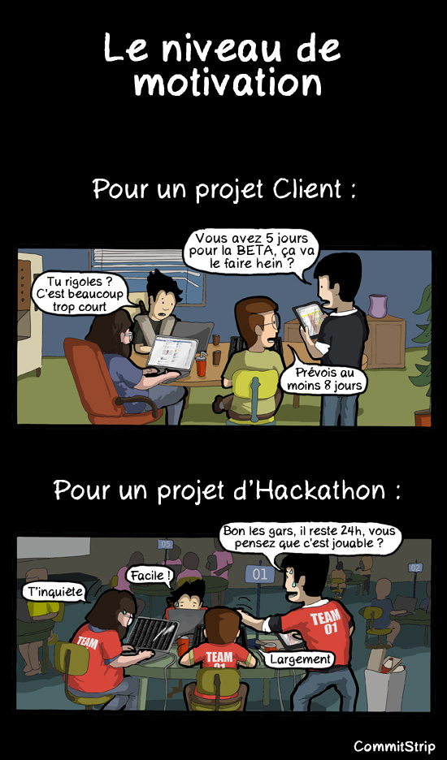
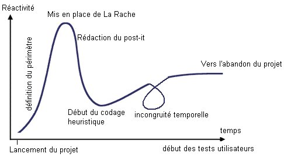
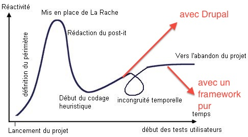
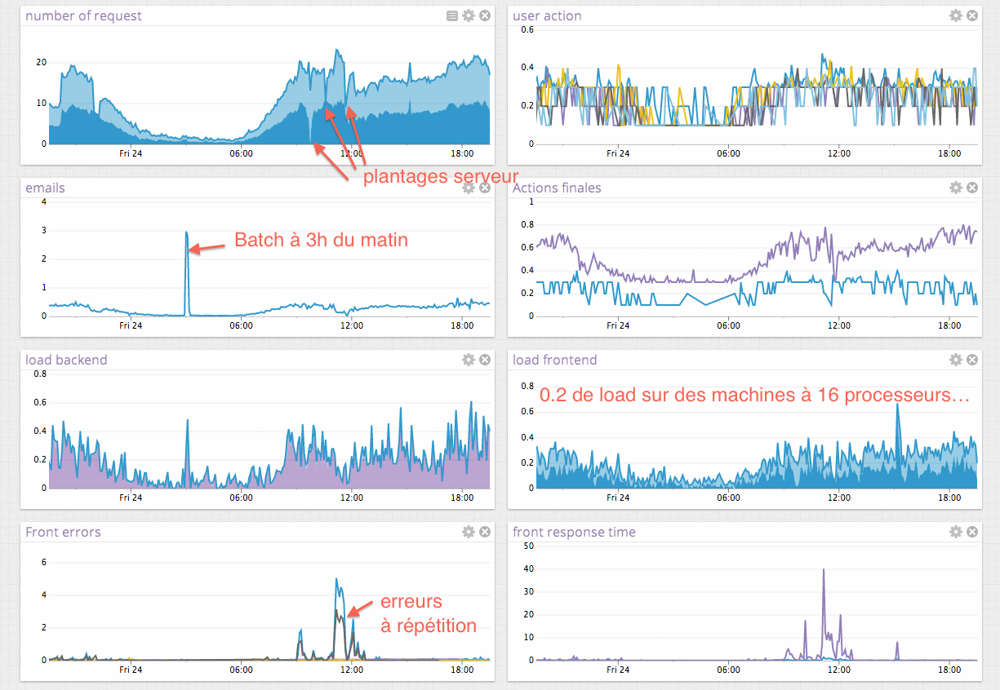

Drupal au secours de la méthode R.A.C.H.E
(autrement dit… Drupal en gestion de projet "live")
Bastien Jaillot
Je suis fainéant pragmatique ಠ_ಠ
Conseil, réalisation, audit, expertise et formation
...Poney, Guinness et gif animé.

Source : http://www.commitstrip.com/fr/2012/09/18/cest-toujours-une-histoire-de-contexte/
Le niveau de motivation
- Pour un projet client
- Le CP : vous avez cinq jours pour la BETA, ça va le faire hein ?
- Dev 1 : Tu rigoles ? C'est beaucoup trop court
- DT : Prévois au moins 8 jours
- Pour un projet d'Hackaton
- Le CP : bon les gars, il reste 24h, vous pensez que c'est jouable ? ?
- Dev 1 : T'inquiètes
- Dev 2 : Facile !
- DT : Largement
Pré-requis
- Être un GyShiDo-San (cf slide suivante)
- Être fainéant
- Être curieux
- Connaître l'écosystème Drupal
- Découvrir / Apprendre en permanence
- Partager
GyShiDo-San ?
L'art de "Getting your Shit Done" !
- Relentless Focus
- Boring Consistency
- No Bullshit
- No Meetings
- Follow Up
- Don't be an Asshole
Méthode R.A.C.H.E
Qui-que-quoi-où-quand-comment-pourquoi ?
R.A.C.H.E ?
- Rapid
- Application
- Conception and
- Heuristic
- Extreme-programming
Cycle typique d'utilisation de la R.A.C.H.E
If you don't care about bugs, design or scalability, it only takes 2 days to build anything
Une méthode pour des projets sans gestion de projet
Essayons de faire mieux,
dans la même durée
Le projet : plateforme de participation citoyenne
- Projet de cinq citoyens
- Deux experts Web (Simon Perdrisat @gagarine et moi)
- Serveur dédié à disposition
- Liberté d'utiliser des briques logicielles… fun (K/V store, (lucene) index, message queuing, asynchrone, near-realtime computing)
- https://www.parlement-et-citoyens.fr
Le projet : plateforme de participation citoyenne
- Très très peu de temps
- Risque d'engranger beaucoup de données (cool, cool, cool)
- Aucune idée de l'avenir du projet ? (à j+1) : LIVE!
- Et donc… très très peu de temps
- https://www.parlement-et-citoyens.fr
Le projet : plateforme de participation citoyenne
n défi fonctionnel et humain plus qu'un défi technique
Ne laissez pas la technique ralentir le projet.
En savoir plus sur le projet
Utilisez vos connaissances pour construire (ensemble) un monde meilleur
Étape 0 : réduction du périmètre
Toujours, encore, … et encore !
Rappel : on ne sait pas comment le site va évoluer, pourquoi prédire ? Mettons nous en situation de réaction efficace
Donc réduction du périmètre par 4, plein de pages prétenduement dynamique => statique + text filter
Étape 1 : DDSD
Data Driven Script Development
DDSD – étape 1.1
- Contenu (structuré, mais encore inconnu) sur lequel on peut intéragir
- Implémentation d'une méthodologie conçue en trois ans par un non-informaticien
DDSD – étape 1
Ce qu'on a obtenu au final
- Enquête : node
- Élément d'enquêtes : entity (eck)
- Arborescence d'élément d'enquêtes : entity (eck)
- Source : entity (eck)
- Intérêt de la source : entity (eck)
- Avis : entity (eck)
- Élément d'avis : entity (eck)
- le tout relié dans tous les sens par entityreference
DDSD – étape 1
- Contenu trop complexe à contribuer
- Pas le temps de préparer une UI
- Fixtures + script pour importer
DDSD – sous le capot
- loader Yaml (Symfony Component)
- Drush
- yaml file (one per enquete)
- Merci entity_property_values_create_entity
Jusque-là, un symfony serait bien meilleur et plus efficace
- Mais… les contributeurs doivent pouvoir faire vivre le site sans aide technique
Ainsi…
Développements prévus != développements effectués
Exemple : pas encore de gestion de la poubelle : aucun spam, contenu injurieux reçu (qui l'eût cru !)
Quelques exemples supra utiles
- Cache
- Entity Construction Kit (ECK)
- Voting API
- Search API
Gestion du cache
Éviter les optimisations préventives, tout en sachant que c'est facile de mettre en place après
- Cache de base en bases de données
- Utilisation de Search API
- Ajout d'Entity Cache
- Invalidation + regénération événementielle du cache
- Pré-calcul de plein de choses dans Entity Cache
- Utilisation de redis
/**
* Implements hook_entity_load().
*
* Will be CACHED in redis once for all
*/
function smg_concertation_entity_load($entities, $type) {
if ($type == SOMETHING_INTERESTING) {
$something = make_a_big_calcul($entities);
foreach ($entities as $entity) {
$entity->precalculated_value = $something[$entity->id];
}
}
}
Sont pré-calculées
- tous les compteurs
- liaisons avec les comptes utilisateurs (logo, nom, etc.)
- permalink (liens vers une recherche à facette)
- sous items pré-fetchés
- vote activé ou pas
Module ECK
- UI pour créer des entités / bundle / configurer champs
- Exportable
- Mais des manques, comblés depuis :
Module Search API et consorts
- Dénormalisation du contenu
- Workflow, facettes, ♥
- Quelques ajouts :
- Exposition de nouvelles données pré-calculées
- Utilisation stockage DB puis Solr
Module Voting API et consorts
- Gestion du cache
- Plusieurs widgets
- Mais des manques, comblés depuis :
- is_useful, bonne logique mais mauvais rendu => surcharge js
- trois requêtes sql par entité affichée. J'en avais >200 par page à cause de mon contenu arborescent, surcharge du formatter (ou patch, me rappelle plus)
- un form généré pour chaque affichage => surcharge du formattter pour uniquement afficher les données quand pas authentifié
// hook_field_prepare_view take an array of entity,
// not one entity
// override formatter
function smg_voting_field_formatter_info() {
return array(
'smg_voting_formatter_default' => array(
'label' => t('SMG Voting Default'),
'field types' => array('is_useful'),
),
);
}
/**
* Implementation of hook_field_formatter_view().
*/
function smg_voting_field_formatter_view($entity_type, $entity, $field, $instance, $langcode, $items, $display) {
if (!user_is_logged_in()) { // should be a permission check ;)
return 'blabla html';
}
// some code
$element[0] = drupal_get_form('is_useful_exposed_formatter', $settings);
return $element;
}
Quelques astuces supplémentaires
- Utilisation de Mandrill pour envoyer les mails transactionnels (module)
- Thème basé sur mothership + Twitter bootstrap pour un thème propre, simple et passe partout
- Page d'accueil = un node blindé d'html + ouput filter (même pas honte)
- Community tags intégré avec des entities (patch à nettoyer et à proposer)
Et des bonus
- Backup automatique avec Drush
- Tout est rejouable (features, script)
- Multi-site dès le départ
- … un CMS complet à disposition !
Ce que je ferais au prochain projet
- Configurer tout le serveur avec Chef
- Inclure dès le départ une logique de statistiques => statsd + graphite (ou un service équivalent : datadog)
Configuration serveur et déploiement avec Chef
- Logiciel de gestion de configuration, gestion de rôles, recettes, déploiement, environnement.
- Automatisation, industrialisation facile à utiliser
- http://www.opscode.com/chef/
Dashboard applicatif

Exemple des métriques
- nombre d'erreurs 404 / 500
- temps de génération des pages
- nombre de pages en cache / générées from scratch
- nombre d'utilisateurs
- nombre de blocs générés
// # Exemples d'API
StatsD::increment('opengov.action.vote');
StatsD::timing('opengov.page.render', $time);
StatsD::gauge('opengov.count.users', $count);
Aggrégation de data : StatsD + Datadog
- Gratuit avec un jour de rétention et intégré avec Chef
- $15 / mois par serveur pour un an de rétention + gestion des alertes
- Encore mieux : New Relic
- Stack serveur open source existe, mais en R.A.C.H.E, on ne passe pas plus de 10mn à mettre en place un service !
Extrapolation aux projets de tous les jours ?
Build it, release it, analyse it and only then decide if it needs optimising.
L’Agilité c’est : comment travailler dans l’incertitude et dans l’ignorance (celle des évolutions technologiques, des clients, des marchés, etc.).
Attention à la dette technique
un début de projet en mode R.A.C.H.E. ?
"un démarrache"

Bastien Jaillot / @bastnic
coucou@jolicode.com
http://jolicode.github.io/drupal-methode-rache
PS : on recrute ♥